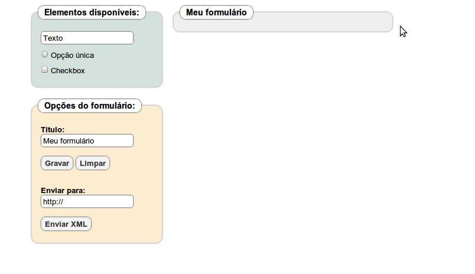
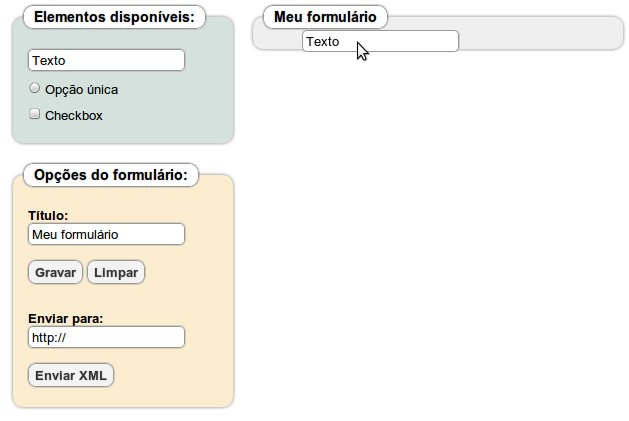
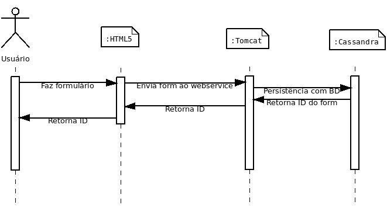

HTML5
A componente
Essa componente utiliza o HTML5. O HTML5 pode ser entendido como a união das linguagens CSS (Cascading Style Sheet), JavaScript com o HTML.A principal função dessa componente é a criação de formulários para serem utilizados em um dispositivo móvel com a componente Android e solicitar a persistência para o webservice Tomcat.
Fórmulário

Todo formulário tem opções para configuração:
- Título do formulário;
- Gravá-lo localmente;
- Limpá-lo;
- Enviá-lo para o webservice.
O formulário pode ser composto com as seguintes opções:
- Texto Livre;
- Opcção única;
- Opção múltipla;
Características
Cada campo tem características que podem ser editadas:
- Rótulo do Campo;
- Nome do campo, utilizado internamente no código;
- Posicionamento do campo dentro do formulário;
- Texto de ajuda do campo, exibido para o usuário;
- Definição de campo obrigatório;
- Um valor padrão.
- Tamanho máximo do valor do campo, em número de caracteres;
- Tipo de dado do campo, entre texto livre e apenas números.
- Quantidade de opções;
- Posicionamento das opções;
- Rótulo e valor de cada opção.
Adição
A adição dos campos no formulário ocorre através do recurso Drag and Drop utilizando o mouse de maneira bem intuitiva.

Envio
O Envio de dados para o servidor ocorre com a utilização da função XmlHttpRequest uma API disponibilizada pelo navegador, que possibilita ao website iniciar uma requisição HTTP. O formulário é representado por um arquivo XML, contendo todos seus componetes e suas propriedades, esse XML é enviado aowebservice para persistência.
Gravar
Esse botão representa a função de gravação do formulário antes do envio.
Essa gravação é possibilitada utilizando o formato
JSON (Java Script Object Notation) para converter cada atrítuto dos campos editáveis em uma string tornando possível a utilização do
recurso do HTML5 WebStorage. O WebStorage é o substitudo dos cookies, permite gravar uma pilha de strings, que podem ser recuperadas
pela website.
Caso de uso
Imagine um professor que queira fazer um estudo socio-econômico anônimo de uma classe do ensino médio. Usando seu notebook em casa, ele prepara os questionários e os grava .
Código
Classes.js
Implementa as classes dos componentes do formulário, assim como o próprio fórmulário.classes.js
jquery.min.js
Biblioteca básica JQuery.jquery.min.js
jquery.numeric.js
Biblioteca para manuseio número do JQuery.jquery.numeric.js
json.min.js
Biblioteca básica JSON.json.min.js
script.js
Implementa os scripts inerentes à componente, utiliza as bibliotecas já listadas.script.js
index.html
Página principal da componente.index.html
estilo.css
Contêm as configurações de estilo de index.html.estilo.css